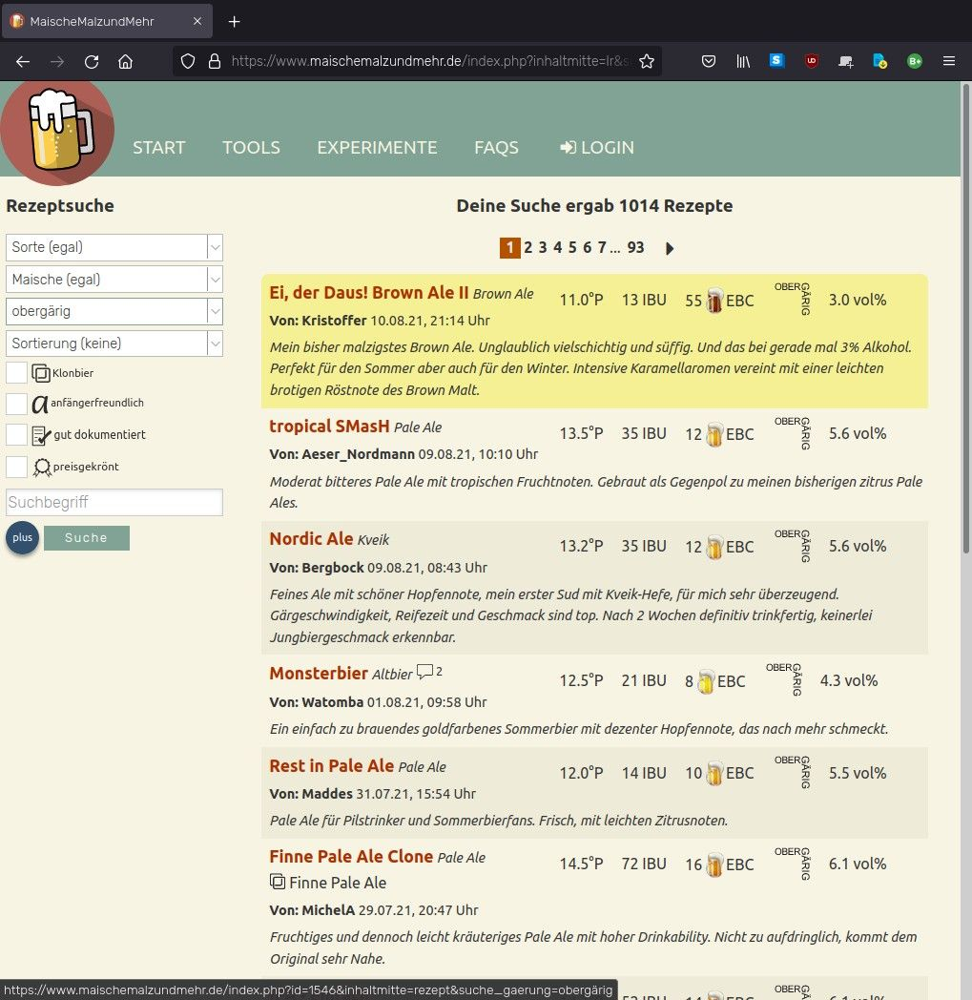
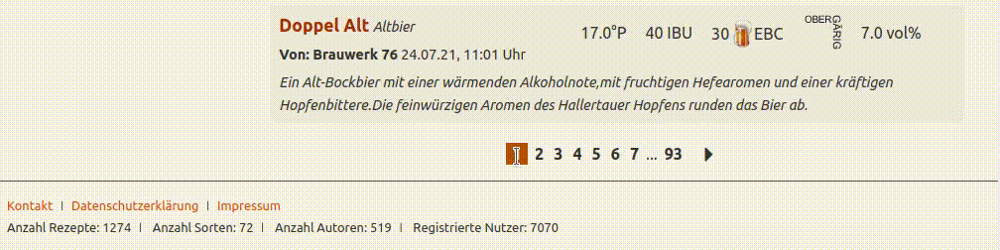
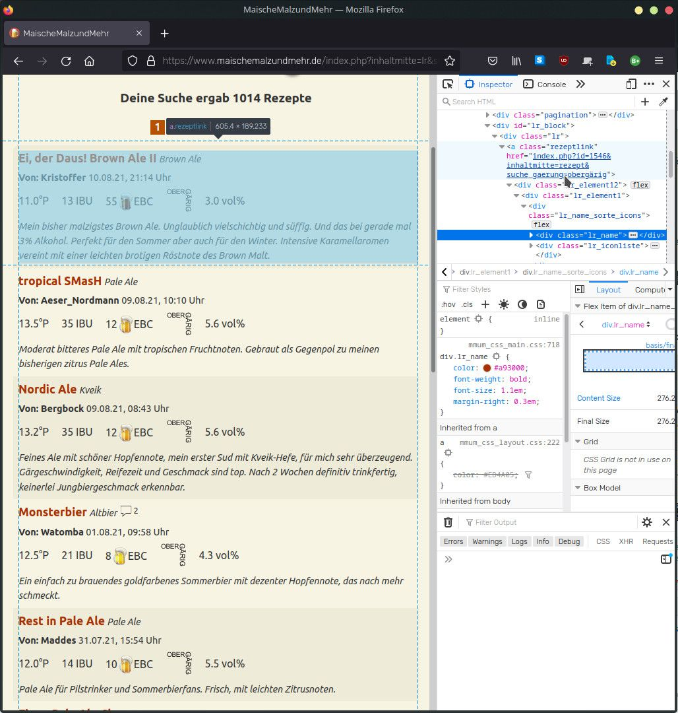
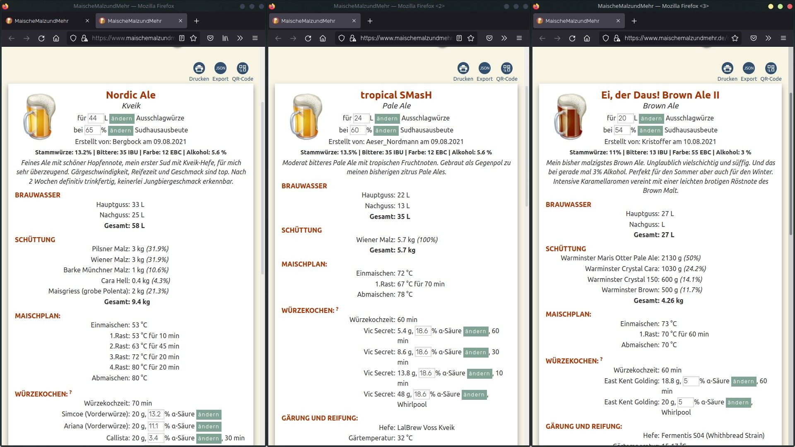

Dataset: BeerBot#
%pip install beautifulsoup4
Requirement already satisfied: beautifulsoup4 in /home/m/miniconda3/envs/ex_ai/lib/python3.12/site-packages (4.13.3)
Requirement already satisfied: soupsieve>1.2 in /home/m/miniconda3/envs/ex_ai/lib/python3.12/site-packages (from beautifulsoup4) (2.6)
Requirement already satisfied: typing-extensions>=4.0.0 in /home/m/miniconda3/envs/ex_ai/lib/python3.12/site-packages (from beautifulsoup4) (4.12.2)
Note: you may need to restart the kernel to use updated packages.
from bs4 import BeautifulSoup
# Documentation for BeautifulSoup: https://www.crummy.com/software/BeautifulSoup/bs4/doc/
import requests
Get the data#
We will use the recipes from maischemalzundmehr.de
We reduce the recipes to top-fermented (obergärig), because it’s easier to brew.
The search query returns 1336 recipes. (The images are not up to date, so some numbers vary.)

Web scraping#
The results are listed on 122 pages. Through the link preview we can see how we can access all pages.

# url = https://www.maischemalzundmehr.de/index.php?inhaltmitte=lr&seite=2&suche_gaerung=oberg%C3%A4rig
# We use string formatting to insert the variable {page_number} instead of the actual number.
page_number = 1
url_page = f"https://www.maischemalzundmehr.de/index.php?inhaltmitte=lr&seite={page_number}&suche_gaerung=oberg%C3%A4rig"
print(url_page)
https://www.maischemalzundmehr.de/index.php?inhaltmitte=lr&seite=1&suche_gaerung=oberg%C3%A4rig
Next we will extract all links of one page that lead to the recipes. Through inspection of the html code we can get an identifiyer for all links: the class “rezeptlink”:

Extract all ids from one page#
# Request html code of page 1:
response = requests.get(url_page)
# Read html code as BeautifulSoup object:
soup = BeautifulSoup(response.text, 'html.parser')
# Extract all links that have the attribute class="rezeptlink".
for a in soup.find_all('a', class_="rezeptlink"):
print(a['href'])
index.php?id=2094&inhaltmitte=rezept&suche_gaerung=obergärig
index.php?id=2093&inhaltmitte=rezept&suche_gaerung=obergärig
index.php?id=2092&inhaltmitte=rezept&suche_gaerung=obergärig
index.php?id=2090&inhaltmitte=rezept&suche_gaerung=obergärig
index.php?id=2089&inhaltmitte=rezept&suche_gaerung=obergärig
index.php?id=2088&inhaltmitte=rezept&suche_gaerung=obergärig
index.php?id=2085&inhaltmitte=rezept&suche_gaerung=obergärig
index.php?id=2084&inhaltmitte=rezept&suche_gaerung=obergärig
index.php?id=2083&inhaltmitte=rezept&suche_gaerung=obergärig
index.php?id=2082&inhaltmitte=rezept&suche_gaerung=obergärig
index.php?id=2080&inhaltmitte=rezept&suche_gaerung=obergärig
# As we need just the id, we can drop the rest.
link = "index.php?id=1535&inhaltmitte=rezept&suche_gaerung=obergärig"
link = link[link.find('id=')+3:link.find('&')]
link
'1535'
# Now we can store this in a list.
ids = []
for a in soup.find_all('a', class_='rezeptlink'):
link = a['href']
id_ = link[link.find('id=')+3:link.find('&')]
ids.append(id_)
print(ids)
['2094', '2093', '2092', '2090', '2089', '2088', '2085', '2084', '2083', '2082', '2080']
# We will wrap the code above into a function.
def get_ids(url):
''' Return all ids linked on one page. '''
# Load html code of page:
response = requests.get(url)
soup = BeautifulSoup(response.text, 'html.parser')
ids_ = [] # temporary list for ids.
for a in soup.find_all('a', class_='rezeptlink'):
link = a['href']
id_ = link[link.find('id=')+3:link.find('&')]
ids_.append(id_)
return ids_
Loop through all pages and extract all links#
ids = []
for i in range(1, 122+1):
page_number = i
url_page = f"https://www.maischemalzundmehr.de/index.php?inhaltmitte=lr&seite={page_number}&suche_gaerung=oberg%C3%A4rig"
# Get ids and add them to the list
ids += get_ids(url_page)
# As a backup we will store all ids in a text file.
with open('data/beer_ids.txt', 'w') as f:
for id_ in ids:
f.write(str(id_)+'\n')
Normalizing data#
If we compare just the first three recipes, we see that all result in a different quantity of beer. In order to use the data for machine learning, we have to normalize it, thus calculate the ingredients for a fixed quantity of beer.

Luckily the website offers a function to export a recipe as JSON.
Url by default:
https://www.maischemalzundmehr.de/export_json.php?id=1544&factoraw=&factorsha=&factorhav=&factorha1=&factorha2=&factorha3=&factorha4=&factorha5=
Inserting 20 instead of 44L for the Nordic Ale results in a changed URL:
https://www.maischemalzundmehr.de/export_json.php?id=1544&factoraw=20&factorsha=65&factorhav=13.2&factorha1=3.4&factorha2=13.2&factorha3=11.1&factorha4=&factorha5=
Luckily it’s enough to use the first parameter to receive the recipt in JSON format.
https://www.maischemalzundmehr.de/export_json.php?id=1544&factoraw=20
# Download a recipe with requests.
response = requests.get('https://www.maischemalzundmehr.de/export_json.php?id=1544&factoraw=20')
with open('test.json', 'w', encoding='utf-8') as f:
f.write(response.text)
Download all recipes in JSON-format#
from tqdm import tqdm # To visualize the progress
for id_ in tqdm(ids):
response = requests.get(f"https://www.maischemalzundmehr.de/export_json.php?id={id_}&factoraw=20")
with open(f"data/beer_recipes/{id_.zfill(4)}'.json", 'w', encoding='utf-8') as f:
f.write(response.text)
100%|█████████████████████████████████████████████████| 1336/1336 [05:07<00:00, 4.34it/s]
Create the dataset#
Every recipe is stored in a separate json file. We’ll use this to create a JSONL file (‘L’ = line. Every line holds a separate JSON object instead of having all recipes in one JSON object. JSONL is useful for very large datasets (so not for this one, but we’ll use it nevertheless for convenience).
import os
import json
def read_json_files_from_directory(directory_path):
"""
Reads all JSON files from the specified directory and returns a list of JSON objects.
"""
json_objects = []
filenames = os.listdir(directory_path)
filenames.sort()
for filename in filenames:
if filename.endswith(".json"):
file_path = os.path.join(directory_path, filename)
with open(file_path, 'r', encoding='utf-8') as file:
json_objects.append(json.load(file))
return json_objects
def write_jsonl_file(json_objects, output_path):
"""
Writes a list of JSON objects to a JSON Lines (JSONL) file.
"""
with open(output_path, 'w', encoding='utf-8') as file:
for obj in json_objects:
json.dump(obj, file)
file.write('\n')
recipes_json = read_json_files_from_directory('data/beer_recipes')
write_jsonl_file(recipes_json, 'data/beer.jsonl')
# Create a new JSONL file
with open('data/beer.jsonl', 'r', encoding='utf8') as f:
# Loop through the list of recipes
recipes = f.readlines()
for recipe in recipes[:3]:
print(recipe)
{"Rezeptquelle": "www.maischemalzundmehr.de", "ExportVersion": "2.0", "Name": "Alt 43", "Datum": "14.02.2011", "Sorte": "Altbier", "Autor": "muldengold", "Ausschlagwuerze": 20, "Stammwuerze": 14.5, "Bittere": 25, "Farbe": 35, "Alkohol": 6, "Kurzbeschreibung": "Malziges Altbier mit dezentem Hopfenaroma und -geschmack", "Malze": [{"Name": "Münchner Malz", "Menge": 2.91, "Einheit": "kg"}, {"Name": "Pilsner Malz", "Menge": 1.09, "Einheit": "kg"}, {"Name": "Röstmalz", "Menge": 36, "Einheit": "g"}], "Maischform": "infusion", "Hauptguss": 13.454545454545455, "Einmaischtemperatur": 50, "Rasten": [{"Temperatur": 52, "Zeit": 15}, {"Temperatur": 65, "Zeit": 70}, {"Temperatur": 78, "Zeit": 10}], "Abmaischtemperatur": 78, "Nachguss": 16.727272727272727, "Kochzeit_Wuerze": 70, "Hopfenkochen": [{"Sorte": "Saaz", "Menge": 18, "Alpha": 4.4, "Zeit": 70, "Typ": "Vorderwuerze"}, {"Sorte": "Northern Brewer", "Menge": 9, "Alpha": 10, "Zeit": 60, "Typ": "Standard"}, {"Sorte": "Saaz", "Menge": 9, "Alpha": 4.4, "Zeit": 5, "Typ": "Standard"}], "Hefe": "WYEAST #1007 (German Ale)", "Gaertemperatur": "16", "Endvergaerungsgrad": 74, "Karbonisierung": 5}
{"Rezeptquelle": "www.maischemalzundmehr.de", "ExportVersion": "2.0", "Name": "MB Stout", "Datum": "16.02.2011", "Sorte": "Stout", "Autor": "muldengold", "Ausschlagwuerze": 20, "Stammwuerze": 14, "Bittere": 56, "Farbe": 100, "Alkohol": 5.5, "Kurzbeschreibung": "Leckeres Stout. Simples aber authentisches Rezept. Mildes Röstaroma und rabenschwarzer Farbe.", "Malze": [{"Name": "Pilsner Malz", "Menge": 3.82, "Einheit": "kg"}, {"Name": "Röstgerste", "Menge": 220, "Einheit": "g"}, {"Name": "Röstmalz", "Menge": 150, "Einheit": "g"}], "Maischform": "infusion", "Hauptguss": 14.545454545454547, "Einmaischtemperatur": 50, "Rasten": [{"Temperatur": 67, "Zeit": 90}, {"Temperatur": 78, "Zeit": 10}], "Abmaischtemperatur": 78, "Nachguss": 14.90909090909091, "Kochzeit_Wuerze": 90, "Hopfenkochen": [{"Sorte": "Northern Brewer", "Menge": 44, "Alpha": 10, "Zeit": 90, "Typ": "Standard"}], "Hefe": "Wyeast 1084 Irish Ale", "Gaertemperatur": "16", "Anmerkung_Autor": "Ursprünglich waren 1 kg Röstgerste geplant. Habe die Gerste (1kg) selbst geröstet, was eine ziemliche Rauchentwicklung in der Küche verursachte. Am Ende waren nur 600 g übrig. Den Rest habe ich durch Röstmalz (ca. 1200 EBC) ersetzt. Das Jungbier hat bei 8-15°C für ca. 2 Monate im Nachgärfass gereift. Das Ergebnis war echt lecker. Das Röstaroma war deutlich warnehmbar ohne jedoch aufdringlich zu sein. Röstmalz und -gerste wurden von Beginn an mit eingemaischt. Die Bittere von 56 mag hoch erscheinen - kam jedoch sehr ausgeglichen rüber. "}
{"Rezeptquelle": "www.maischemalzundmehr.de", "ExportVersion": "2.0", "Name": "Ur-Alt, Typ II", "Datum": "22.03.2011", "Sorte": "Altbier", "Autor": "tauroplu", "Ausschlagwuerze": 20, "Stammwuerze": 13, "Bittere": 35, "Farbe": 45, "Alkohol": 4.7, "Kurzbeschreibung": "S\u00fcffiges Altbier nach D\u00fcsseldorfer Art mit feiner R\u00f6stnote", "Malze": [{"Name": "M\u00fcnchner Malz", "Menge": 2.5, "Einheit": "kg"}, {"Name": "Wiener Malz", "Menge": 1.17, "Einheit": "kg"}, {"Name": "Melanoidinmalz", "Menge": 250, "Einheit": "g"}, {"Name": "Caram\u00fcnch II", "Menge": 250, "Einheit": "g"}, {"Name": "Carafa spezial II", "Menge": 42, "Einheit": "g"}], "Maischform": "infusion", "Hauptguss": 12.5, "Einmaischtemperatur": 60, "Rasten": [{"Temperatur": 57, "Zeit": 10}, {"Temperatur": 63, "Zeit": 60}, {"Temperatur": 73, "Zeit": 20}], "Abmaischtemperatur": 78, "Nachguss": 15, "Kochzeit_Wuerze": 90, "Hopfenkochen": [{"Sorte": "Spalter Select", "Menge": 22, "Alpha": 5.3, "Zeit": 90, "Typ": "Vorderwuerze"}, {"Sorte": "Tettnanger", "Menge": 24, "Alpha": 6, "Zeit": 90, "Typ": "Standard"}, {"Sorte": "Magnum", "Menge": 4, "Alpha": 15, "Zeit": 70, "Typ": "Standard"}], "Hefe": "Brewferm TOP", "Gaertemperatur": "20", "Endvergaerungsgrad": 69, "Anmerkung_Autor": "Das R\u00f6stmalz zugeben, wenn die Maltoserast beendet ist.\r\nTyp II hat, bedingt durch die niedrig verg\u00e4rende Hefe, weniger Alk. und ist noch s\u00fcffiger als Typ I"}
Conversation#
# We'll use this function from the
def str_to_dict(user, assistant):
# create a list with the entries as dictionaries
conversation_data = [{'role':'user', 'content':user}, {'role':'assistant', 'content':assistant}]
# create a dictionary with key 'conversations' and add the list as value
dictionary = {'conversations':conversation_data}
return dictionary
def extract_field(json_string, field):
"""
Extracts the value for a field from a JSON-formatted string.
:param json_string: A string containing JSON data.
:return: The value of the field, or None if the field does not exist.
"""
try:
# Parse the JSON string into a Python dictionary
data = json.loads(json_string)
# Extract the value for the "kurzbeschreibung" field
result = data.get(field)
return result
except json.JSONDecodeError:
# Handle the case where the JSON string is invalid
print("Invalid JSON string")
return None
dataset = []
with open('data/beer.jsonl', 'r', encoding='utf8') as f:
data = f.readlines()
for sample in data:
# Extract the user content
user = extract_field(sample, 'Kurzbeschreibung')
if user is not None:
# The answer of the assistant will be the whole JSON object
dict_entry = str_to_dict(user, sample)
dataset.append(dict_entry)
len(dataset)
1297
dataset[0]
{'conversations': [{'role': 'user',
'content': 'Malziges Altbier mit dezentem Hopfenaroma und -geschmack'},
{'role': 'assistant',
'content': '{"Rezeptquelle": "www.maischemalzundmehr.de", "ExportVersion": "2.0", "Name": "Alt 43", "Datum": "14.02.2011", "Sorte": "Altbier", "Autor": "muldengold", "Ausschlagwuerze": 20, "Stammwuerze": 14.5, "Bittere": 25, "Farbe": 35, "Alkohol": 6, "Kurzbeschreibung": "Malziges Altbier mit dezentem Hopfenaroma und -geschmack", "Malze": [{"Name": "Münchner Malz", "Menge": 2.91, "Einheit": "kg"}, {"Name": "Pilsner Malz", "Menge": 1.09, "Einheit": "kg"}, {"Name": "Röstmalz", "Menge": 36, "Einheit": "g"}], "Maischform": "infusion", "Hauptguss": 13.454545454545455, "Einmaischtemperatur": 50, "Rasten": [{"Temperatur": 52, "Zeit": 15}, {"Temperatur": 65, "Zeit": 70}, {"Temperatur": 78, "Zeit": 10}], "Abmaischtemperatur": 78, "Nachguss": 16.727272727272727, "Kochzeit_Wuerze": 70, "Hopfenkochen": [{"Sorte": "Saaz", "Menge": 18, "Alpha": 4.4, "Zeit": 70, "Typ": "Vorderwuerze"}, {"Sorte": "Northern Brewer", "Menge": 9, "Alpha": 10, "Zeit": 60, "Typ": "Standard"}, {"Sorte": "Saaz", "Menge": 9, "Alpha": 4.4, "Zeit": 5, "Typ": "Standard"}], "Hefe": "WYEAST #1007 (German Ale)", "Gaertemperatur": "16", "Endvergaerungsgrad": 74, "Karbonisierung": 5}\n'}]}
Save the dataset#
write_jsonl_file(dataset, 'data/beer_conversations.jsonl')
Load the dataset#
from datasets import load_dataset
dataset = load_dataset('json', data_files='data/beer_conversations.jsonl', split='train')
dataset[:3]
{'conversations': [[{'role': 'user',
'content': 'Malziges Altbier mit dezentem Hopfenaroma und -geschmack'},
{'role': 'assistant',
'content': '{"Rezeptquelle": "www.maischemalzundmehr.de", "ExportVersion": "2.0", "Name": "Alt 43", "Datum": "14.02.2011", "Sorte": "Altbier", "Autor": "muldengold", "Ausschlagwuerze": 20, "Stammwuerze": 14.5, "Bittere": 25, "Farbe": 35, "Alkohol": 6, "Kurzbeschreibung": "Malziges Altbier mit dezentem Hopfenaroma und -geschmack", "Malze": [{"Name": "Münchner Malz", "Menge": 2.91, "Einheit": "kg"}, {"Name": "Pilsner Malz", "Menge": 1.09, "Einheit": "kg"}, {"Name": "Röstmalz", "Menge": 36, "Einheit": "g"}], "Maischform": "infusion", "Hauptguss": 13.454545454545455, "Einmaischtemperatur": 50, "Rasten": [{"Temperatur": 52, "Zeit": 15}, {"Temperatur": 65, "Zeit": 70}, {"Temperatur": 78, "Zeit": 10}], "Abmaischtemperatur": 78, "Nachguss": 16.727272727272727, "Kochzeit_Wuerze": 70, "Hopfenkochen": [{"Sorte": "Saaz", "Menge": 18, "Alpha": 4.4, "Zeit": 70, "Typ": "Vorderwuerze"}, {"Sorte": "Northern Brewer", "Menge": 9, "Alpha": 10, "Zeit": 60, "Typ": "Standard"}, {"Sorte": "Saaz", "Menge": 9, "Alpha": 4.4, "Zeit": 5, "Typ": "Standard"}], "Hefe": "WYEAST #1007 (German Ale)", "Gaertemperatur": "16", "Endvergaerungsgrad": 74, "Karbonisierung": 5}\n'}],
[{'role': 'user',
'content': 'Leckeres Stout. Simples aber authentisches Rezept. Mildes Röstaroma und rabenschwarzer Farbe.'},
{'role': 'assistant',
'content': '{"Rezeptquelle": "www.maischemalzundmehr.de", "ExportVersion": "2.0", "Name": "MB Stout", "Datum": "16.02.2011", "Sorte": "Stout", "Autor": "muldengold", "Ausschlagwuerze": 20, "Stammwuerze": 14, "Bittere": 56, "Farbe": 100, "Alkohol": 5.5, "Kurzbeschreibung": "Leckeres Stout. Simples aber authentisches Rezept. Mildes Röstaroma und rabenschwarzer Farbe.", "Malze": [{"Name": "Pilsner Malz", "Menge": 3.82, "Einheit": "kg"}, {"Name": "Röstgerste", "Menge": 220, "Einheit": "g"}, {"Name": "Röstmalz", "Menge": 150, "Einheit": "g"}], "Maischform": "infusion", "Hauptguss": 14.545454545454547, "Einmaischtemperatur": 50, "Rasten": [{"Temperatur": 67, "Zeit": 90}, {"Temperatur": 78, "Zeit": 10}], "Abmaischtemperatur": 78, "Nachguss": 14.90909090909091, "Kochzeit_Wuerze": 90, "Hopfenkochen": [{"Sorte": "Northern Brewer", "Menge": 44, "Alpha": 10, "Zeit": 90, "Typ": "Standard"}], "Hefe": "Wyeast 1084 Irish Ale", "Gaertemperatur": "16", "Anmerkung_Autor": "Ursprünglich waren 1 kg Röstgerste geplant. Habe die Gerste (1kg) selbst geröstet, was eine ziemliche Rauchentwicklung in der Küche verursachte. Am Ende waren nur 600 g übrig. Den Rest habe ich durch Röstmalz (ca. 1200 EBC) ersetzt. Das Jungbier hat bei 8-15°C für ca. 2 Monate im Nachgärfass gereift. Das Ergebnis war echt lecker. Das Röstaroma war deutlich warnehmbar ohne jedoch aufdringlich zu sein. Röstmalz und -gerste wurden von Beginn an mit eingemaischt. Die Bittere von 56 mag hoch erscheinen - kam jedoch sehr ausgeglichen rüber. "}\n'}],
[{'role': 'user',
'content': 'Süffiges Altbier nach Düsseldorfer Art mit feiner Röstnote'},
{'role': 'assistant',
'content': '{"Rezeptquelle": "www.maischemalzundmehr.de", "ExportVersion": "2.0", "Name": "Ur-Alt, Typ II", "Datum": "22.03.2011", "Sorte": "Altbier", "Autor": "tauroplu", "Ausschlagwuerze": 20, "Stammwuerze": 13, "Bittere": 35, "Farbe": 45, "Alkohol": 4.7, "Kurzbeschreibung": "S\\u00fcffiges Altbier nach D\\u00fcsseldorfer Art mit feiner R\\u00f6stnote", "Malze": [{"Name": "M\\u00fcnchner Malz", "Menge": 2.5, "Einheit": "kg"}, {"Name": "Wiener Malz", "Menge": 1.17, "Einheit": "kg"}, {"Name": "Melanoidinmalz", "Menge": 250, "Einheit": "g"}, {"Name": "Caram\\u00fcnch II", "Menge": 250, "Einheit": "g"}, {"Name": "Carafa spezial II", "Menge": 42, "Einheit": "g"}], "Maischform": "infusion", "Hauptguss": 12.5, "Einmaischtemperatur": 60, "Rasten": [{"Temperatur": 57, "Zeit": 10}, {"Temperatur": 63, "Zeit": 60}, {"Temperatur": 73, "Zeit": 20}], "Abmaischtemperatur": 78, "Nachguss": 15, "Kochzeit_Wuerze": 90, "Hopfenkochen": [{"Sorte": "Spalter Select", "Menge": 22, "Alpha": 5.3, "Zeit": 90, "Typ": "Vorderwuerze"}, {"Sorte": "Tettnanger", "Menge": 24, "Alpha": 6, "Zeit": 90, "Typ": "Standard"}, {"Sorte": "Magnum", "Menge": 4, "Alpha": 15, "Zeit": 70, "Typ": "Standard"}], "Hefe": "Brewferm TOP", "Gaertemperatur": "20", "Endvergaerungsgrad": 69, "Anmerkung_Autor": "Das R\\u00f6stmalz zugeben, wenn die Maltoserast beendet ist.\\r\\nTyp II hat, bedingt durch die niedrig verg\\u00e4rende Hefe, weniger Alk. und ist noch s\\u00fcffiger als Typ I"}\n'}]]}